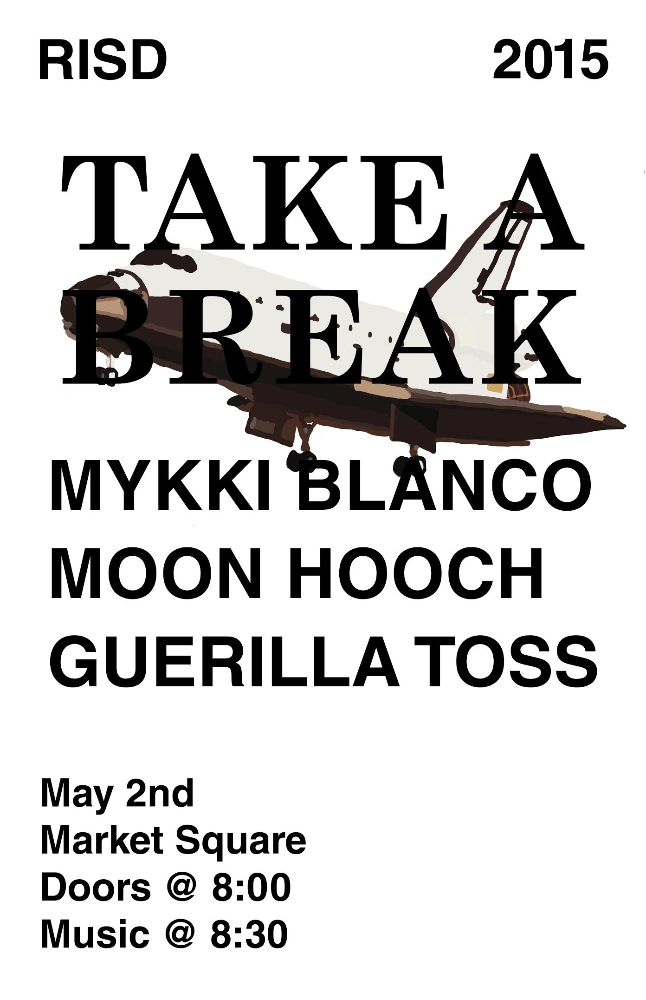
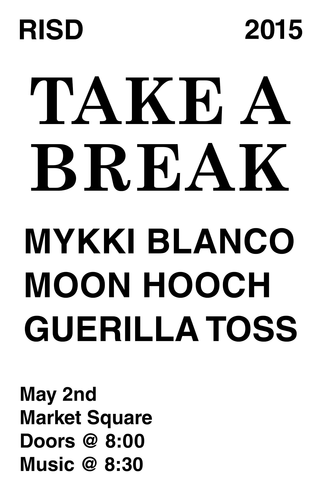
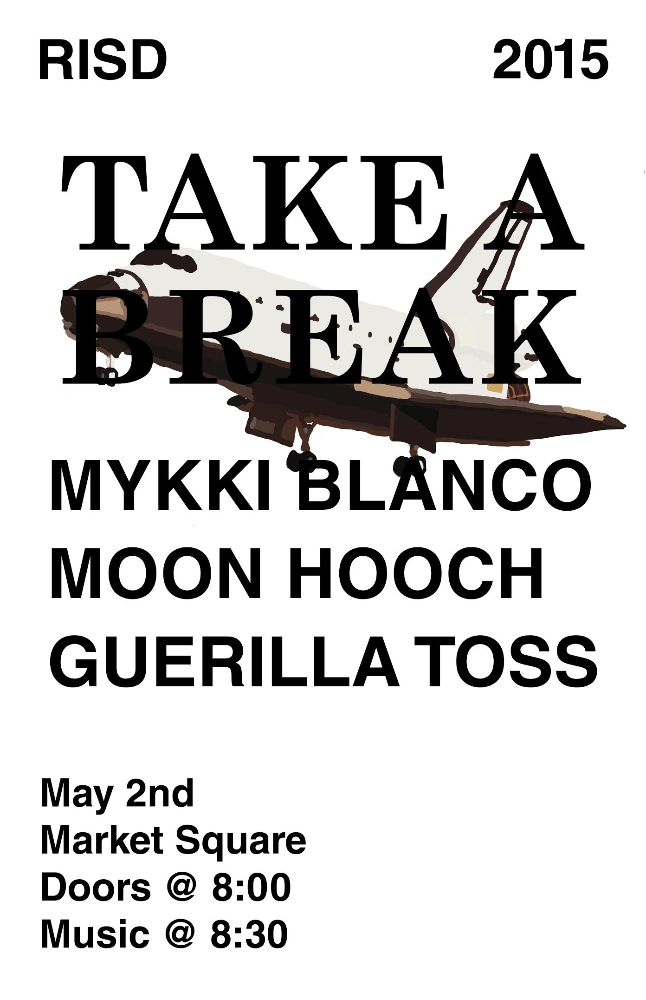
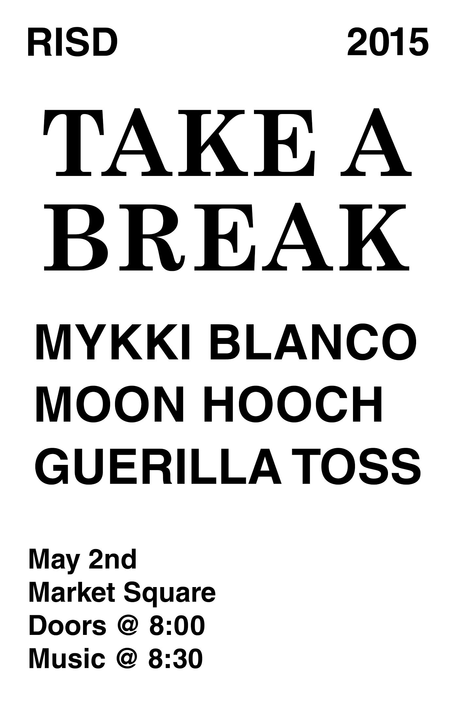

Hello!
I'm Tim. I'm currently a senior in Furniture Design at the Rhode Island School of Design.
If you would like a copy of my resume or just want to say hello, contact me at tzarras@risd.edu.
I have an
Instagram as well.
All project photos taken by Tim Zarras

Website built by Tim Zarras
© Tim Zarras 2015. All Rights Reserved


 


